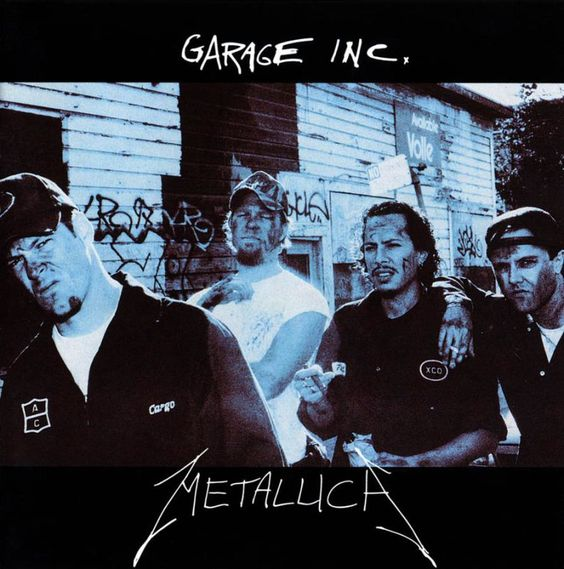

Garage Inc.
1998
A Garage Inc. 1998 novemberében jelent meg, és egy különleges kiadvány a Metallica pályafutásában, mert nem új, saját dalokat tartalmazott, hanem feldolgozásokat. A cím is utal a banda múltjára: a Metallica mindig is szeretett a próbateremben kedvenc zenekaraitól számokat játszani, és már korábban, 1987-ben kiadták a Garage Days Re-Revisited EP-t. A Garage Inc. ezt az ötletet vitte tovább, jóval nagyobb szabásban.
A duplaalbum első lemezén frissen felvett feldolgozások hallhatók, köztük olyan klasszikusok, mint a Turn the Page (Bob Seger), a Whiskey in the Jar (Thin Lizzy/ír népdal változat) vagy a Die, Die My Darling (Misfits). Ezek közül többhöz videoklip is készült, és a Metallica koncertjein is állandó helyet kaptak. A második lemez pedig régi ritkaságokat gyűjt össze: kislemezek B-oldalait, a Garage Days anyagát és más korábbi feldolgozásokat.
A Garage Inc. különlegessége, hogy egyszerre mutatja meg a zenekar gyökereit és zenei ízlését. Hetfieldék ezzel tisztelegtek azok előtt a zenekarok előtt – a Misfitstől kezdve a Diamond Headen és Motörheaden át egészen a Black Sabbathig –, akik hatással voltak rájuk.
A fogadtatás pozitív volt: a rajongók értékelték, hogy a Metallica megmutatta, honnan merítette inspirációit, és több feldolgozás önálló slágerré vált. A Whiskey in the Jar például Grammy-díjat is nyert, és a zenekar egyik legnépszerűbb videoklipjévé vált.
Ez az album inkább amolyan tiszteletadás és játékos „kikapcsolódás” volt a banda számára, de egyben lezárta a Load–ReLoad korszak kísérletező időszakát is, mielőtt a 2000-es években újabb stílusváltások következtek.
| Szám | Hossz | Szerző |
|---|---|---|
| Free Speech for the Dumb | 2:36 | Discharge |
| It's Electric | 3:34 | Diamond Head |
| Sabbra Cadabra | 6:20 | Black Sabbath |
| Turn the Page | 6:06 | Bob Seger |
| Die, Die My Darling | 2:29 | Misfits |
| Loverman | 7:53 | Nick Cave and the Bad Seeds |
| Mercyful Fate | 11:11 | Mercyful Fate |
| Astronomy | 6:37 | Blue Öyster Cult |
| Whiskey in the Jar | 5:05 | Traditional (Thin Lizzy version) |
| Tuesday's Gone | 9:06 | Lynyrd Skynyrd |
| The More I See | 4:49 | Discharge |
| Helpless | 6:38 | Diamond Head |
| The Small Hours | 6:43 | Holocaust |
| The Wait | 4:55 | Killing Joke |
| Crash Course in Brain Surgery | 3:10 | Budgie |
| Last Caress / Green Hell | 3:30 | Misfits |
| Am I Evil? | 7:50 | Diamond Head |
| Blitzkrieg | 3:37 | Blitzkrieg |
| Breadfan | 5:41 | Budgie |
| The Prince | 4:26 | Diamond Head |
| Stone Cold Crazy | 2:19 | Queen |
| So What | 3:09 | Anti-Nowhere League |
| Killing Time | 3:04 | Sweet Savage |
| Overkill - Live | 4:05 | Motörhead |
| Damage Case - Live | 3:40 | Motörhead |
| Stone Dead Forever - Live | 4:52 | Motörhead |
| Too Late Too Late - Live | 3:12 | Motörhead |